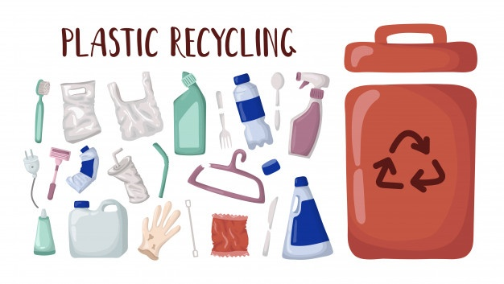

<div class="container">
    <div class="row mt-5 mb-5 mr-5 d-flex justify-content-center">
        <div class="col-md-6">
            <h4 class="text-center">
                Plástico
            </h4>
            <br>
            <p class="fs-16 text-center">
                Não são recicláveis: Fraldas;
                Absorventes;
                Peças de plástico utilizadas na criação de computadores, celulares e outros materiais
                eletrônicos;
                Plástico tipo celofane;
                Espuma;
                Embalagens plásticas metalizadas, muito utilizadas em alimentos;
                Tomadas;
                Adesivos;
                Cabos de panela.
                <br>
                <br>
                Como separá-los: potes e frascos limpos e sem resíduos para evitar animais transmissores de
                doenças próximo ao local de armazenamento.
            </p>
        </div>

        <div class="col-md-6 ">
            <div class="d-flex justify-content-left">
                
            </div>
        </div>
        <hr>
        <div class="col-md-12 d-flex justify-content-center">
            <iframe width="460" height="315" src="https://www.youtube.com/embed/nN32puXXmLE?start=6"
                title="YouTube video player" frameborder="0"
                allow="accelerometer; autoplay; clipboard-write; encrypted-media; gyroscope; picture-in-picture"
                allowfullscreen></iframe>
        </div>
    </div>
</div>